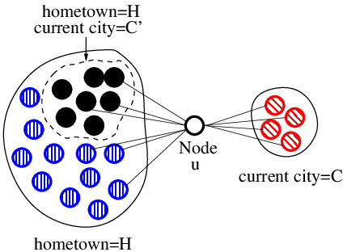
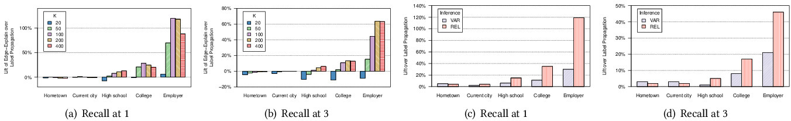
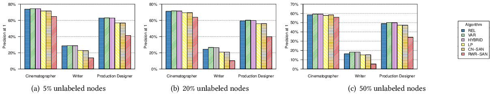

This is a web copy of https://doi.org/10.1145/3184558.3186238
originally published by ACM Press,
redistributed under the terms of
Creative Commons Attribution 4.0 (CC BY 4.0).
The modifications
from the original are solely to improve HTML aiming to make it Findable, Accessible, Interoperable and Reusable.
augmenting HTML metadata and avoiding ACM trademark.
To reference this HTML version, use:
We consider the problem of inferring node labels in a partially labeled graph where each node in the graph has multiple label types and each label type has a large number of possible labels. Existing approaches such as Label Propagation [27] fail to consider interactions between the label types. Our proposed method, called EdgeExplain, explicitly models these interactions, while still allowing scalable inference under a distributed message-passing architecture. On a large subset of the Facebook social network, collected in a previous study [4], EdgeExplain outperforms label propagation for several label types, with lifts of up to 120% for recall@1 and 60% for recall@3.
ACM Reference Format: Deepayan Chakrabarti, Stanislav Funiak, Jonathan Chang, and Sofus A. Macskassy. 2018. Joint Label Inference in Networks Extended Abstract. In WWW '18 Companion: The 2018 Web Conference Companion,April 23–27, 2018, Lyon, France. ACM, New York, NY, USA 5 Pages. https://doi.org/10.1145/3184558.3186238
1 Introduction
Consider the problem of inferring multiple fields such as the hometowns, current cities, and employers of users of a social network, where users often only partially fill in their profile, if at all. Here, each user is associated with one label of each label type (such as hometown, employer, etc.), and the set of possible labels for each type is very high-dimensional. By predicting the profile fields, the social network can make better friend recommendations or show more relevant content. Consequently, accurate predictions can greatly improve the user experience. 
Figure 1:An example graph of u and her friends: The hometown friends of u coincidentally contain a subset with current city C′. This swamps the group from u’s actual current city C, causing label propagation to infer C′ for u. However, our proposed model (called EdgeExplain) correctly explains all friendships by setting the hometown to be H and current city to be C.
Such graph-based semi-supervised learning problems have been widely studied. A standard method of label inference is label propagation and its variants [2, 3, 20, 25, 26, 27], which try to set the label probabilities of nodes so that friends have similar probabilities. However, label propagation assumes only a single category of relationships. It therefore fails to address the complexity of edge formation in networks, where nodes have different reasons to link to each other (see Figure 1 for an example). Statistical relational learning methods [6, 13, 14] build classifiers based on both node attributes and links, but [15] show that the performance of these methods is comparable to label propagation. Other powerful models [8, 12, 17, 19, 21] are difficult to scale. Graph structure has been modeled using latent classes [1, 11, 18, 22] and latent variables [10, 16, 19], but with an emphasis on link prediction. More recent work on attribute inference in social networks [7, 23, 24] use variants of random walks and label propagation.
Our proposed method, named EdgeExplain, approaches the problem from a different viewpoint, using the following intuition: Two people form an edge in a social network because they share the same label for one or more label types (e.g., both went to the same college). Using this intuition, we can go beyond standard label propagation in the following way: instead of taking the graph as given, and modeling labels as items that propagate over this graph, we consider the labels as factors that can explain the observed graph structure. For example, the inferences for u made by label propagation leave u’s edges from C completely unexplained. Our proposed method rectifies this, by trying to infer node labels such that for each edge u ∼ v, we can explain the existence of the edge in terms of a shared label — u and v are friends from the same hometown, or college, or the like. While we are primarily interested in inferring labels, we note that the inferred reason for each edge can be useful by itself. For example, if a new node u joins a network and forms and edge with v, and we can infer that the reason is a shared college, we can recommend other college friends of v as possible new edges for u.
Our contributions are as follows.
Formulation:We propose a probabilistic model, called EdgeExplain, for the social network given the labels of all nodes in the network. This model codifies the intuition of “explaining link” via shared labels. The model has two key properties. First, the presence or absence of a link is conditionally independent of all other nodes and edges given the labels of the two endpoints of the link. This enables distributed computation for inference, which is important for scaling to large networks. Second, labels corresponding to all the label types are jointly considered in the model.
Scalable inference:We propose two approaches for inference under EdgeExplain: a relaxation labeling approach, and a variational method. Both are scalable iterative methods. The difference is that relaxation labeling works with a modified (“relaxed”) version of the probabilistic model, while the variational approach optimizes a lower bound of the likelihood of EdgeExplain. We present a comparison of these two approaches under our problem setting.
Analysis:We present an analysis of the conditions that affect the accuracy of EdgeExplain relative to label propagation. In particular, we find conditions under which the inferences of label propagation (which looks at each label type independently) deviate maximally from those of EdgeExplain (which does joint inference).
Empirical evaluation:We show that EdgeExplain is more accurate than competing baselines on several datasets, including a sample of the Facebook social network and a movie network. On Facebook, EdgeExplain achieves lifts of up to 120% for recall@1 and 60% for recall@3 over label propagation. Among the inference procedures for EdgeExplain, relaxation labeling works better than variational inference in most cases.
2 The EdgeExplain model
Consider an undirected network $\mathcal {G}=(V,E)$ with nodes V and edges E. Let $\mathcal {T} =\lbrace t_1,\ldots ,t_{|\mathcal {T}|}\rbrace$ denote the set of label types. For each label type $t\in \mathcal {T}$, let L(t) denote the (high-dimensional) set of labels for that label type. Each node in the graph is associated with binary variables Sutℓ ∈ {0, 1}, where Sutℓ = 1 if node u ∈ V has label ℓ for label type t. Let $S_V\subset \lbrace S_{ut\ell }\mid u\in V, t\in \mathcal {T}, \ell \in L(t)\rbrace$ denote the set of variables whose values are known (the “visible” variables). Let SH denote the remaining variables (the “hidden” variables). Our goal is to infer the correct values of SH, given SV and $\mathcal {G}$.
One simple approach is to apply Label Propagation separately for each label type. However, this is flawed, because it treats the label types as independent. For example, in the context of social networks, it implicitly assumes that friends tend to be similar in all respects (i.e., all label types). However, intuitively, each friendship tends to have a single reason: two people are friends because they share the same high school or college or current city, etc. Thus, friendships need to be modeled by considering all label types jointly.
We propose a probabilistic model (called EdgeExplain) for such networks.
where Z is a normalization constant, and σ(x) = 1/(1 + e− x) is the sigmoid function. Here, r(u, v, t) indicates whether a shared label type t is the reason underlying the edge u ∼ v (Eq. 2). Eq. 1 is maximized if the softmax function achieves a high value for each edge u ∼ v, i.e., if each edge is “explained.” This is achieved if the sum $\sum _{t\in \mathcal {T}} r(u, v, t)$ is relatively high, which in turn is satisfied if the product SutℓSvtℓ is 1 for even one label ℓ — in other words, when there exists any label ℓ that both u and v share.
3 Inference
We consider two methods for parameter inference under EdgeExplain. The relaxation labeling approach, called REL, solves a relaxed optimization problem where the binary hidden variables Sutℓ ∈ {0, 1} are replaced by real-valued variables futℓ ∈ [0, 1]. The variational approach, called VAR, maximizes a lower bound on the likelihood of EdgeExplain. Both approaches can scale to large networks, and our work serves as a comparison of these two in the context of network inference.
3.1 Relaxation Labeling
Inference under EdgeExplain can be viewed as the problem of maximizing the model likelihood (Eqs. 1-3) over the hidden variables Sutℓ ∈ {0, 1}. In the spirit of [27], we propose a relaxation in terms of a real-valued function f, with futℓ ∈ [0, 1] representing the probability that Sutℓ = 1, i.e., the probability that user u has label ℓ for label type t. This yields the following optimization:
The problem is not convex in f, but is convex in $f_u = \lbrace f_{ut\ell } | t\in \mathcal {T}, \ell \in L(t) \rbrace$ if the distributions fv are held fixed for all nodes v ≠ u. Hence, we propose an iterative algorithm to infer f. Given fv for all v ≠ u, finding the optimal fu corresponds to solving the following sub-problem:
where the summation is only over the set Γ(u) of the friends of u, and we again restrict fu to be a set of $|\mathcal {T}|$ probability distributions, one for each label type. We note that g(·) is convex and Lipschitz continuous with constant L = α · |Γ(u)|, where |Γ(u)| is the number of friends of u. Thus, the sub-problem can be optimally solved by projected gradient ascent. We iteratively solve such sub-problems, one for each node u, until we converge to a local optimum of Eq. 4.
where μut · represents a multinomial distribution over all labels ℓ ∈ L(t) for label type t for user u; for notational convenience, we set μutℓ to 0 or 1 if the user's labels are known.
Define ηuvt = ∑ℓ ∈ L(t)μutℓμvtℓ. Let ${\bf w} \in \lbrace 0, 1\rbrace ^{|\mathcal {T} |}$ represent a binary vector of length $|\mathcal {T} |$, with wt being the tth component and |w| the number of “ones”. Given the parameters μ∖{μut ·}, the distribution $\mu _{ut\ell }^*$ that maximizes the RHS of Eq. 7 is given by:
We iterate over the nodes, applying this variational update, until convergence.
4 Analysis
To analyze EdgeExplain, we set up a simplified “ego” network $\mathcal {G}$ consisting of a central node u surrounded by N friends v1, …, vN. Let $Y_u =\lbrace Y_u (t_1), \ldots , Y_u (t_{|\mathcal {T}|})\rbrace$ denote the labels of u for each of the $|\mathcal {T}|$ label types. Similarly, let Yi represent the vector of labels for node vi. Let $\pi (Y_u, Y_{v_1}, \ldots , Y_{v_N})$ denote the probability of observing these labels. Since $\mathcal {G}_u$ is a tree rooted at u, the labels of the friends are conditionally independent given the labels of the ego: $\pi (Y_u, Y_{v_1}, \ldots , Y_{v_N}) = \pi (Y_u)\cdot \prod \pi (Y_i\mid Y_u)$.
We generate node labels as follows. First, the ego u selects her labels first according to a prior π(Yu). Then, each friend vi independently selects a “reason” for her friendship with u by selecting the label type Zi that vi shares with u. This shared label type is drawn according to a multinomial distribution q: q(Zi = t) = qt. Thus, Yi(Zi) = Yu(Zi). The remaining labels of vi are drawn from π(Yi∣Yi(Zi)). This construction of Yu and Yi ensures that there is a shared label for each edge. We now analyze the following inference problem: Given the network $\mathcal {G}_u$ and the labels Yi of all friends vi, predict the labels Yu of the ego.
Clearly, EdgeExplain can choose the correct labels Yu for the ego, since each friendship can explained by at least one shared label. LP fails if the ego has a label ℓ of type t (i.e., Yu(t) = ℓ), but a different label ℓ′ ≠ ℓ of the same type t is shared by more friends; we will call this the event “LP fails via (t, ℓ, ℓ′).” Define
Thus, LP is likely to fail when $\Delta _{t,\ell ,\ell ^{\prime }}$ is large. This happens when the following two conditions hold: (a) label ℓ is somewhat less likely than ℓ′ in the entire population (so that $p_{t,t^{\prime }} (\ell ^{\prime })-p_{t,t^{\prime }} (\ell){\gt}0$), and (b) friendships based on a shared label for label type t are rare (i.e., qt is small and consequently $q_{t^{\prime }}$ can be large).
Maximizing the lower bound of Thm. 4.1 gives us the conditions when LP is most likely to fail. When there are only two label types, and the labels for the ego and her friends follow the same marginal distribution, we can show the following.
With qt < 0.5, the lower bound in Theorem 4.1 under TwoLabels is maximized for
Theorem 4.2 demonstrates the link between the probability $p_{t,t^{\prime }} (\ell)$ of a person having label ℓ and the probability qt of forming a friendship based on a shared label of type t. If $p_{t,t^{\prime }} (\ell)$ is too large, then it becomes very unlikely that another label ℓ′ can be shared by more friends than ℓ. Conversely, if $p_{t,t^{\prime }} (\ell)$ is too small, the ego will rarely have label ℓ, so there will be fewer situations where LP fails. Setting $p_{t,t^{\prime }} (\ell)\approx (1-2q_{t})/(2(1-q_{t}))$ achieves the optimal balance between these two.
5 Experiments
We performed several experiments on simulated and real-world data to verify the accuracy of EdgeExplain. Here, we present some results based on two datasets: a snapshot of the Facebook social network, and a movie network.
5.1 Evaluation on the Facebook network
We performed a study on a previously collected subgraph of the Facebook social network [4]. 1 This data set consists of a large number of users and their friendship edges, as well as the hometown, current city, high school, college, and employer for each user, whenever these fields are available and have their visibility set to public. The accuracy of label inference is measured via 5-fold cross-validation 
Figure 2:Accuracy ofEdgeExplain: Plots (a) and (b) show the lift of EdgeExplain over label propagation (LP). Increasing the number of friends K benefits EdgeExplain much more than label propagation for high school, college, and especially employer. Plots (c) and (d) compare the lift of VAR and REL over LP, for K = 100. REL is seen to outperform VAR, and both are better than LP.

Figure 3:Precision@1 for various label inference methods on the movie network.
Figure 2 shows the lift in recall achieved by EdgeExplain over LP. We observe similar performance of both methods for hometown and current city, but increasing improvements for high school, college, and employer. With fewer employer-based friendships, the prototypical example of Figure 1 would also occur frequently, with label propagation likely picking common employers of (say) hometown friends instead of the less common friendships based on the actual employer. By attempting to explain each friendship, EdgeExplain is able to infer the employer even under such difficult circumstances. This ability to perform well even for under-represented label types makes EdgeExplain particularly attractive. Plots (c) and (d) compare the two inference methods (VAR and REL) for EdgeExplain. While both outperform LP, REL is more accurate than VAR.
5.2 Evaluation on a Movie Network
We constructed a network of English-language movies, where two movies are connected by an edge if they have the same writer, or cinematographer, or production designer (they could share several of these label types). 2 There are 23,921 movies and 189,828 edges. We compared LP against the inference methods for EdgeExplain (REL, VAR, and a combination of the two called HYBRID). 3 We also tested three algorithms that have been recommended by prior work. LINK [24] represents each node as a feature vector encoding the IDs of its neighboring nodes, and a standard classifier is used to predict labels from the feature vector. Given the size of the feature vector (23,921 binary features) and the size of the output labels (39,317 labels in total), we choose Naive Bayes as the classifier. CN-SAN [9] assigns to each unlabeled node the most popular label of each label type among the node's neighbors, and iterates this process until convergence. RWR-SAN [9, 23] picks labels for each label type based on random walks with restarts on a combined graph that includes movie-movie and movie-label edges.
Figure 3 shows the precision@1 for different fractions of the network being labeled. All methods achieve higher accuracy for cinematographer and production designer, but lower accuracy for writer. This is because less than 11% of the edges have a shared-writer as the reason for that edge. All EdgeExplain inference procedures (REL, VAR, and HYBRID) are better than the competing methods for all label types. LP is best among the baseline methods; LINK performed poorly and is omitted from the plots.
6 Conclusions
We proposed the problem of jointly inferring multiple correlated label types in a large network and described the problems with existing single-label models. In common instantiations of this problem, edges are often created for a reason associated with a particular label type (e.g., in a social network, two users may link because they went to the same high school, but they did not go to the same college). We propose the EdgeExplain model which explicitly tries to “explain” the reason behind each edge in terms of at least one shared label between nodes. We presented two inference methods for EdgeExplain: a relaxation-labeling method and a variational approach, both of which lead to fast iterative inference that is equivalent in running time to basic label propagation. Our empirical evaluation on a large subset of the Facebook graph amply demonstrates the benefits of EdgeExplain, with significant improvements across a set of different label types.
REFERENCES
Edoardo M. Airoldi, David M. Blei, Stephen E. Fienberg, and Eric P. Xing. 2008. Mixed membership stochastic blockmodels. Journal of Machine Learning Research9, Sep (2008), 1981–2014.
Shumeet Baluja, Rohan Seth, D Sivakumar, Yushi Jing, Jay Yagnik, Shankar Kumar, Deepak Ravichandran, and Mohamed Aly. 2008. Video suggestion and discovery for YouTube: Taking random walks through the view graph. In Proceedings of the 17th International Conference on World Wide Web. 895–904.
Mikhail Belkin, Partha Niyogi, and Vikas Sindhwani. 2006. Manifold regularization: A geometric framework for learning from labeled and unlabeled examples. Journal of Machine Learning Research7, Nov (2006), 2399–2434.
Deepayan Chakrabarti, Stanislav Funiak, Jonathan Chang, and Sofus A. Macskassy. 2014. Joint inference of multiple label types in large networks. In Proceedings of the 31st International Conference on Machine Learning. 874–882.
D. Chakrabarti, S. Funiak, J. Chang, and S. A. Macskassy. 2017. Joint Label Inference in Networks. JMLR18, 59 (2017).
Soumen Chakrabarti, Byron Dom, and Piotr Indyk. 1998. Enhanced hypertext categorization using hyperlinks. In Proceedings of the 1998 ACM SIGMOD International Conference on Management of Data. 307–318.
Yuxiao Dong, Yang Yang, Jie Tang, Yang Yang, and Nitesh V. Chawla. 2014. Inferring User Demographics and Social Strategies in Mobile Social Networks. In Proceedings of the 20th ACM SIGKDD International Conference on Knowledge Discovery and Data Mining. 15–24.
Nir Friedman, Lise Getoor, Daphne Koller, and Avi Pfeffer. 1999. Learning probabilistic relational models. In Proceedings of the 16th International Joint Conference on Artificial Intelligence. 1300–1309.
Neil Zhenqiang Gong, Ameet Talwalkar, Lester Mackey, Ling Huang, Eui Chul Richard Shin, Emil Stefanov, Elaine (Runting) Shi, and Dawn Song. 2014. Joint Link Prediction and Attribute Inference Using a Social-Attribute Network. ACM Transactions on Intelligent Systems and Technology5, 2, Article 27 (April 2014), 27:1–27:20 pages.
Peter D. Hoff, Adrian E. Raftery, and Mark S. Handcock. 2002. Latent space approaches to social network analysis. J. Amer. Statist. Assoc.97, 460 (2002), 1090–1098.
Charles Kemp, Joshua B. Tenenbaum, Thomas L. Griffiths, Takeshi Yamada, and Naonori Ueda. 2006. Learning systems of concepts with an infinite relational model. In Proceedings of the 21st National Conference on Artificial Intelligence. 381–388.
Daphne Koller and Avi Pfeffer. 1998. Probabilistic frame-based systems. In Proceedings of the 15th National Conference on Artificial Intelligence. 580–587.
Qing Lu and Lise Getoor. 2003. Link-based classification. In Proceedings of the 20th International Conference on Machine Learning. 496–503.
Sofus Attila Macskassy and Foster Provost. 2003. A simple relational classifier. In Proceedings of the Multi-Relational Data Mining Workshop at the 9th ACM SIGKDD International Conference on Knowledge Discovery and Data Mining. 64–76.
Sofus A. Macskassy and Foster Provost. 2007. Classification in networked data: A toolkit and a univariate case study. Journal of Machine Learning Research8, May (2007), 935–983.
Kurt T. Miller, Thomas L. Griffiths, and Michael I. Jordan. 2009. Nonparametric latent feature models for link prediction. In Advances in Neural Information Processing Systems 22. 1276–1284.
Jennifer Neville and David Jensen. 2007. Relational dependency networks. Journal of Machine Learning Research8, Mar (2007), 653–692.
Krzysztof Nowicki and Tom A. B. Snijders. 2001. Estimation and prediction for stochastic blockstructures. J. Amer. Statist. Assoc.96, 455 (2001), 1077–1087.
Konstantina Palla, David A. Knowles, and Zoubin Ghahramani. 2012. An infinite latent attribute model for network data. In Proceedings of the 29th International Conference on Machine Learning. 1607–1614.
Partha Pratim Talukdar and Koby Crammer. 2009. New regularized algorithms for transductive learning. In Proceedings of the European Conference on Machine Learning and Knowledge Discovery in Databases. 442–457.
Benjamin Taskar, Pieter Abbeel, and Daphne Koller. 2002. Discriminative probabilistic models for relational data. In Proceedings of the 18th Conference Conference on Uncertainty in Artificial Intelligence. 485–492.
Zhao Xu, Volker Tresp, Kai Yu, and Hans-Peter Kriegel. 2006. Learning infinite hidden relational models. In ICML Workshop on Open Problems in Statistical Relational Learning.
Zhijun Yin, Manish Gupta, Tim Weninger, and Jiawei Han. 2010. A Unified Framework for Link Recommendation Using Random Walks. In Proceedings of the 2010 International Conference on Advances in Social Networks Analysis and Mining. 152–159.
Elena Zheleva and Lise Getoor. 2009. To Join or Not to Join: The Illusion of Privacy in Social Networks with Mixed Public and Private User Profiles. In Proceedings of the 18th International Conference on World Wide Web. 531–540.
Dengyong Zhou, Olivier Bousquet, Thomas Navin Lal, Jason Weston, and Bernhard Schölkopf. 2003. Learning with local and global consistency. In Advances in Neural Information Processing Systems 16. 321–328.
Xiaojin Zhu and Zoubin Ghahramani. 2002. Learning from labeled and unlabeled data with label propagation. Technical Report. Carnegie Mellon University.
Xiaojin Zhu, Zoubin Ghahramani, and John Lafferty. 2003. Semi-supervised learning using Gaussian fields and harmonic functions. In Proceedings of the 20th International Conference on Machine Learning. 912–919.
FOOTNOTE
Part of this work was done while the authors were employees at Facebook, Inc.
1We worked on a snapshot of data, and there was no interaction with users or their experience on the site.
2We have also experimented with other label types such as director and composer. All results are qualitatively similar and exhibit the same trends.
This paper is published under the Creative Commons Attribution 4.0 International (CC-BY 4.0) license. Authors reserve their rights to disseminate the work on their personal and corporate Web sites with the appropriate attribution.
WWW '18 Companion, April 23-27, 2018, Lyon, France